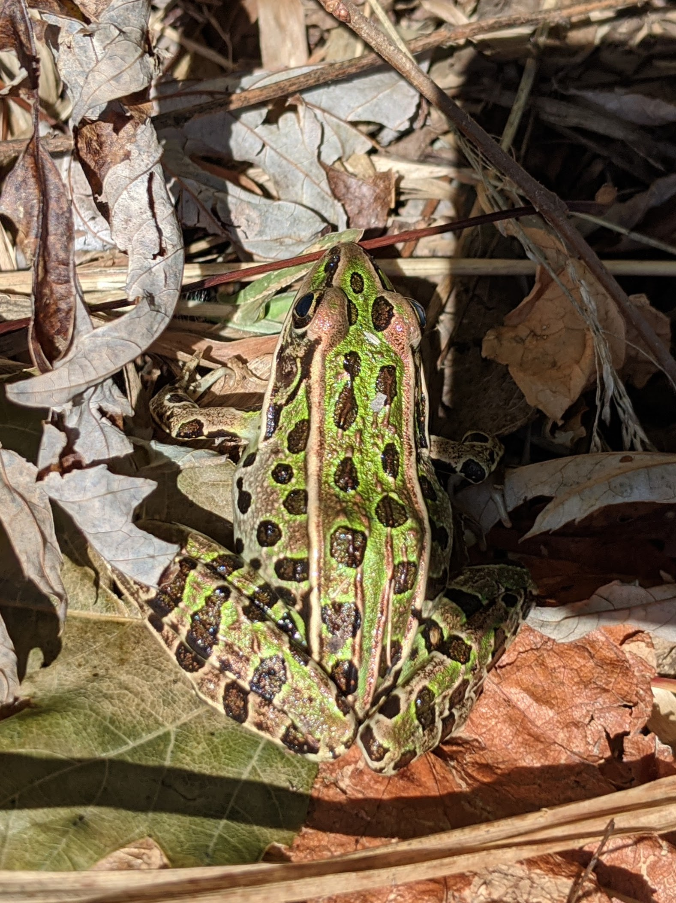
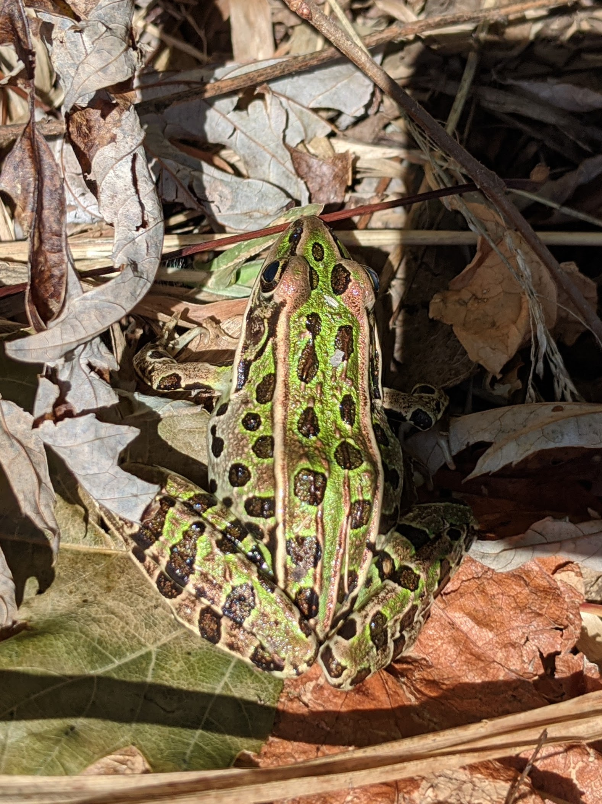

.jpg)
 Distance
Distance Elevation
Elevation Observed Wildlife
Observed WildlifeThis is a terrific place to observe some wonderful New England wildlife, especially of the avian and reptilian form. Great Meadows is a big wetlands with flat trails that follow the shores of a large swamp, river, and a couple ponds. Visitors can expect to see at least one great blue heron and hopefully much more. Bring your binoculars and telephoto lens if you’ve got one. Little energy is required to access the treasures of Great Meadows.
From a young age I took an interest in wildlife and my mom was the one who first encouraged this interest. I remember bird feeders up around the yard and my mom kept a Birds of North America book around. I tried my best to identify the variety of visiting birds. On this day, I was excited to meet my mom at Great Meadows Wildlife Refuge to share in the joy of observing some of New England’s wildlife.

After paying the $4 fee, we climbed up the stairs to the observation tower next to the parking lot. The most obvious feature was the tall grasses of the wetlands which had dried up with the season. In June, when I stopped here via kayak, the meadow was a sea of green. We didn’t see much wildlife from above. There is a stationary set of binoculars there for those more patient than we were.

We descended and started our walk along the path. The raised land that cuts through the middle of the meadow had a few benches and a platform above the wetlands. In June, I saw a muskrat with its kit. On this day, my mother and I saw a great blue heron from the platform (one’s almost guaranteed to see one of these tall birds when visiting similar marshy areas). When we took out our binoculars we saw it struggle to perfectly position its most recent catch to slide down its gullet.

Continuing along the path we reached the shore of the beautiful Concord River. Much of the shores of this waterway are protected and it has a wild feel. We didn’t see any wildlife here and turned left upstream, along the path paralleling the river. There was another opening facing the wetlands and a narrow waterway gave us a view of another heron and an oversized fish wriggling its way in the shallows.


The scenery and wildlife improved while traveling down this path. We disturbed a couple garter snakes who had been basking in the sun and watched them slither into the brush. We saw many more reptiles in the form of painted turtles on logs which stretched from the shore over the water. All, in all, we may have seen over fifty turtles. The smallest was what we thought was a swimming piece of moss no more than three inches and the largest was close to a foot long, dominating the biggest most sunsoaked rock. Although we could see the turtles well enough with our naked eyes, it was cool to see their striped necks through our binoculars.

In addition to the turtles, the foliage was spectacular in this area. Borden Pond, located at the end of the path, was a pretty body of water surrounded by beautiful yellow and red leaves. A larger bird which was either a kingfisher or eastern kingbird flew overhead and we saw but couldn’t identify another beautiful bird in the shrubbery. The last member of wild creatures was a leopard frog which allowed me to get surprisingly close to inspect its beautiful spots.

 

We returned the way we came and ended up covering much more distance than we anticipated for a casual nature walk. While in the area we visited the historic center of Concord. It might be impossible to find a town that embodies the feel of New England more with its old houses, churches, cemeteries, and pubs.